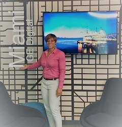

Hello and thank you for visiting my page. I am a Sr Server and Applications operations Engineer. A little bit about my Background:
With ba Bachelors in Industrial Technology and a Masters in Managements information Systems, over 7 years of professional experience equiped with cutting-edge technology skils, it feels great to express myself on my own page. For more backgound on my Professional summary, please CLICK HERE
In the Military world, I am an Army Nurse amd also a HISMO (Health Information Systems Management) Officer.
My Favorite things to do include playing Board games, traveling and visiting family, but above all the leisure, soccer is my favorite sport. I also enjoy volunteering and helping people.